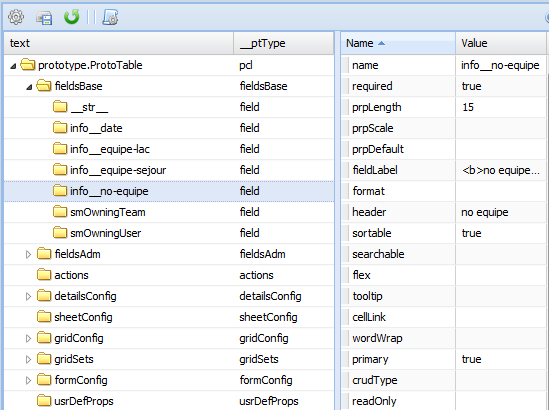

Personnaliser les champs¶
Les exemples de personnalisation suivants montrent comment réaliser la configuration de base pour réussir une interface fonctionnelle et présentable. Vous êtes invités à explorer dans votre espace travail de l’application les propriétés non mentionnées dans cette guide.
Propriété fieldsBase¶
Figure 33 : personnalisation des champs.
- Ouvrez le contenu du dossier fieldsBase en cliquant sur le triangle blanc situé à gauche du dossier.
- Sélectionnez de la liste le champ à personnaliser.
- Modifiez les valeurs.
- Ensuite, enregistrez les changements en cliquant sur le bouton
 Mettre à jour la méta
Mettre à jour la méta
Valeurs:
prpLength valeur numérique que définit le nombre des positions pour le champ. Pour y accéder cliquez deux fois sur le champ valeur de cette propriété.
fieldLabel chaine de caractères que définit l’étiquette du champ. Pour y accéder cliquez deux fois sur le champ valeur de cette propriété.
header chaine de caractères que définit l’entête des colonnes de la grille principale. Pour y accéder cliquez deux fois sur le champ valeur de cette propriété.
sortable valeur booléenne que définit si le champ est utilisé pour classer le contenu de la grille principale. Pour y accéder cliquez deux fois sur le champ valeur de cette propriété.
searchable valeur booléenne que définit si le champ est utilisé pour faire des recherches dans contenu de la grille principale. Pour y accéder cliquez deux fois sur le champ valeur de cette propriété.
flex valeur numérique (pourcentage %) que définit la largeur des colonnes de la grille principale. Flex fait un calcul par rapport à la taille de l’écran et ajuste la largeur de la colonne en conséquence. Pour y accéder cliquez deux fois sur le champ valeur de cette propriété.
tooltip chaine de caractères que créa un message dans la forme d’une infobulle quand la souris passe sur le champ. Utilisé pour offrir plus des informations concernant le champ. Pour y accéder cliquez deux fois sur le champ valeur de cette propriété.
wordWrap valeur booléenne que permet de visualiser le contenu du champ en plusieurs lignes. Propriété utilisée avec les champs de type texte ou de type string (quand la chaine est très longue). Pour y accéder cliquez deux fois sur le champ valeur de cette propriété.